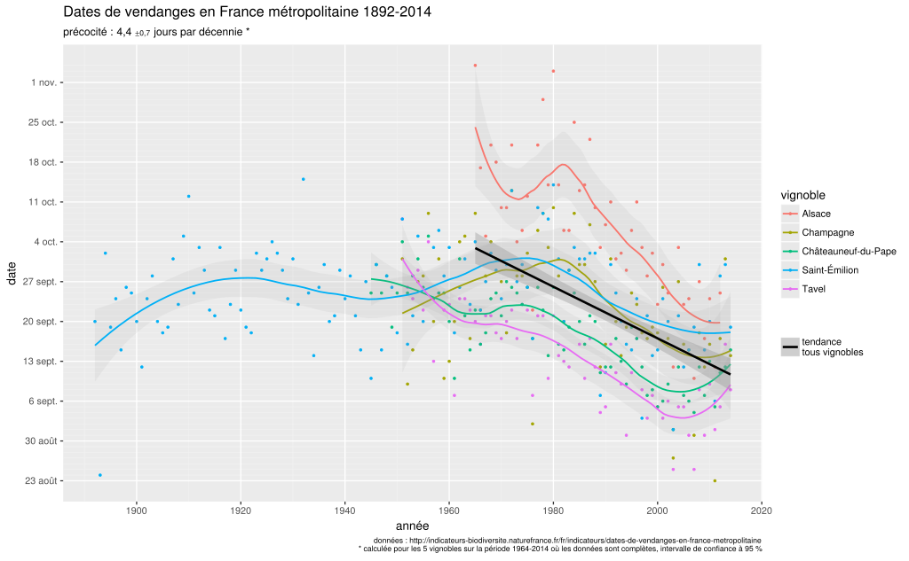
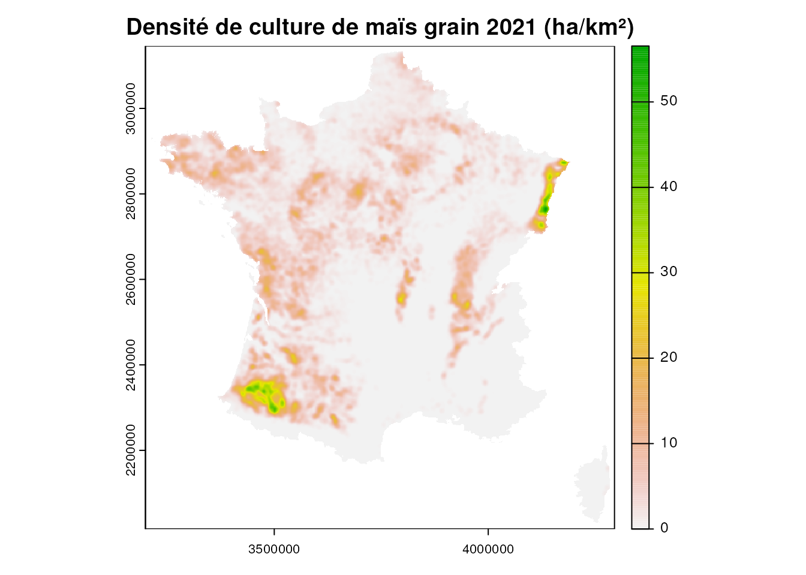
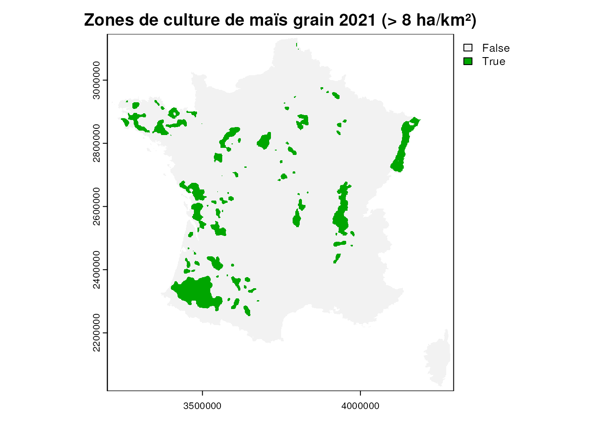
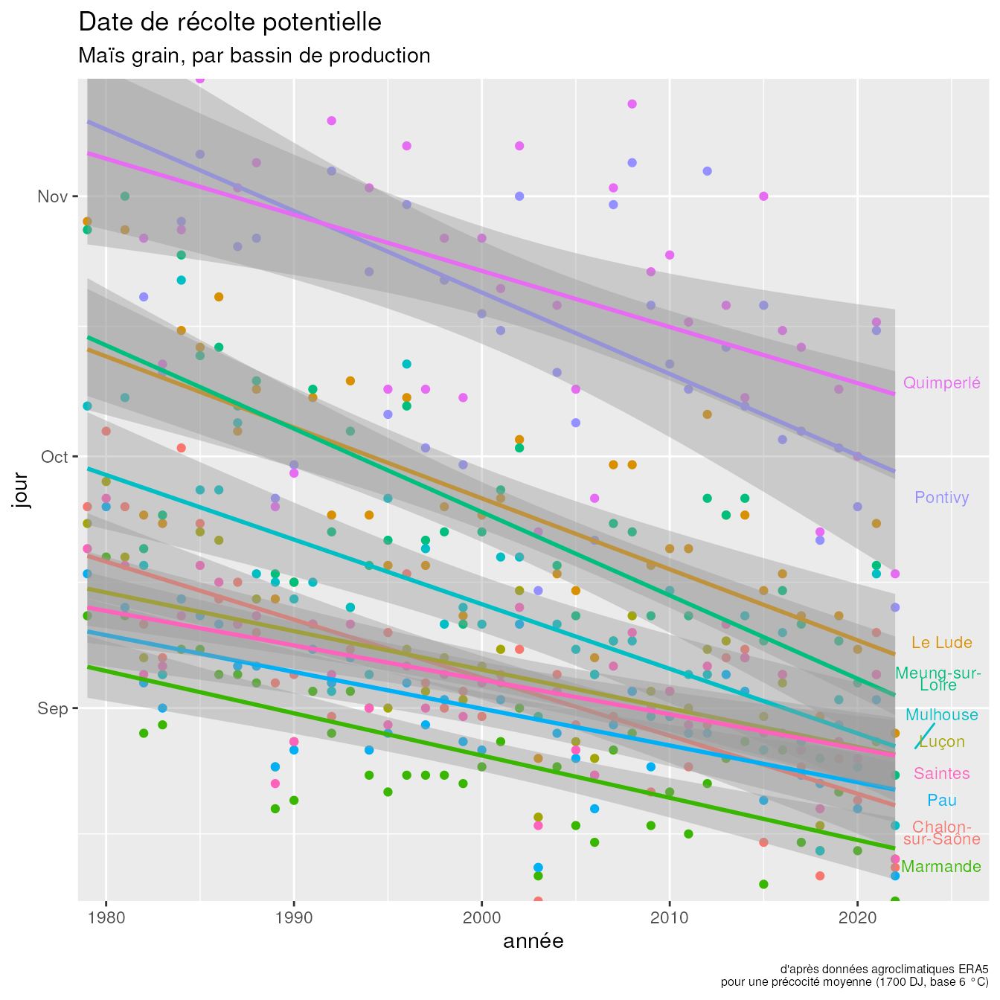

.svg){kind=link}
library(stars) # manipulation de rasters
library(terra) # manipulation de rasters
library(tidyverse) # manipulation des données
library(glue) # interpolation de chaine de caractères
library(fs) # gestion du système de fichier
library(RPostgres) # connexion PostgreSQL
library(sf) # manipulation de données spatiales vecteur
library(leaflet) # carto web
library(gt) # mise en forme tableaux
library(gtsummary) # tableaux de modèles stat
library(ggrepel) # étiquettage graphiques
# D'autres packages sont à installer et seront appelés directement avec leur
# namespace : btb, raster, fasterize, rlang, memoise
# localisation des données dans le stockage "local"
rep_era5 <- "data/era5"
# pour avoir les noms de dates en français
invisible(Sys.setlocale("LC_ALL", "fr_FR.UTF-8"))
options(OutDec = ",",
scipen = 999)
# Connexion à la base PostgreSQL
cnx <- dbConnect(Postgres(),
user = Sys.getenv("USER_POSTGRESQL"),
password = Sys.getenv("PASS_POSTGRESQL"),
host = Sys.getenv("HOST_POSTGRESQL"),
dbname = "defaultdb",
port = 5432,
check_interrupts = TRUE)4 Évolution de la date théorique de récolte
Agronomie et données climatiques rétrospectives avec ERA5
Mots clés
productions végétales, agronomie, climat, ERA5, France
Les organismes vivants, dont les plantes, ont besoin d’une certaine quantité de chaleur pour se développer. La notion de degrés jours a été introduite par les biologistes pour quantifier ce besoin physiologique. Il s’exprime par la somme des différences entre la température moyenne journalière et une température de base1.
1 Degré jour de croissance sur Wikipedia
Peut-on voir comment a évolué la date de récolte théorique d’une culture au cours des 40 dernières années, compte tenu des changements climatiques en cours ?
Des données anciennes existent pour certaines cultures, par exemple pour la vigne et les dates de vendanges, mais pour la plupart il n’y a pas de jeu de données rétrospectif consolidé. Nous allons essayer de combler cette lacune…

4.1 Proposition
Votre mission si vous l’acceptez…
Estimer les tendances de la date potentielle de récolte du maïs grain dans les différents bassins de productions français depuis 1980.
4.1.1 Compétences mises en œuvre
- Utiliser le langage R.
- Manipuler des données géographiques : vecteurs et rasters avec les packages {sf}, {terra}, {stars}.
- Requêter en SQL sur PostgreSQL/PostGIS avec {RPostgres} et {sf}.
- Utiliser le lissage spatial pour synthétiser les données géographiques avec {btb}.
- Créer une carte web interactive avec {leaflet}.
- Estimer et visualiser des tendances : modèle linéaire simple et {ggplot2}.
4.1.2 Données utilisées
Le RPG recense les parcelles déclarées à la PAC (Politique agricole commune) par les agricuteurs : données graphiques et leur culture principale.
Les données 2021 (environ 10 millions de parcelles) sont disponibles dans une base PostgreSQL/PostGIS.
ERA5 agrometeorological indicators est un jeu de données issu d’un projet de réanalyse météorologique qui vise à uniformiser et corriger les données historiques (ERA5). Il fournit des paramètres agro-météorologiques de surface quotidiens sur les quarante dernières années à une résolution spatiale de 0,1 ° (soit environ 8×11 km en France métropolitaine).
Les données de température moyenne journalière 1979-2022 (87 Go à l’origine) ont été préchargées sur Minio et limitées à l’emprise de la métropole, représentant au final 16 000 fichiers de 76 ko = 1,1 Go).
Elles sont au format NetCDF. Un package R existe pour importer et requêter ce jeu de données particulier : {ag5Tools}. Les données peuvent aussi être traitées avec les packages de manipulation de rasters tels que {terra} (ou {raster}) et {stars}.
Admin Express est le référentiel des limites administratives de l’IGN. Des tables simplifiées des communes et des régions 2023 ont été intégrées dans la base PostgreSQL/PostGIS.
4.1.3 Scénario
- Définir les principaux bassins de production du maïs grain à partir du RPG ;
- extraire les températures journalières sur un point central de chaque bassin ;
- calculer les dates de récolte théoriques pour chaque bassin et chaque année ;
- estimer les tendances par bassin.
4.2 Préparation
Le pas-à-pas détaillé est décrit sur la page de démarrage:
- Si ce n’est pas déjà fait, il faut avoir préalablement copié les données depuis le stockage MinIO. Pour cela commencez par exécuter la commande “MC client” de cette page dans votre Terminal, puis les commandes suivantes :
mc cp minio/projet-funathon/2023/sujet2/diffusion/era5.zip ~/work/funathon_sujet2/data/era5.zip
unzip ~/work/funathon_sujet2/data/era5.zip -d ~/work/funathon_sujet2/data/
rm ~/work/funathon_sujet2/data/era5.zipA noter qu’avec ces commandes on copie dans un projet qui se trouve dans un répertoire funathon_sujet2, si votre projet se trouve dans un répertoire funathon2023_sujet2 (ce qui est probablement le cas si vous avez cloné le dépôt Github plutôt que Gitlab), il faut modifier ces commandes légèrement en fonction de ça;
- Pour se connecter à la base PostgreSQL, il faudra avoir défini les bonnes variables d’environnements par exemple en ajoutant
PASS_POSTGRESQL = "xxxx", etc. dans le fichier ~/.Renviron :file.edit("~/.Renviron")et en ayant relancé la session (ctrl+maj+F10).
Vous pouvez vous contenter de la description succinte du scénario ci-dessus pour vous lancer ou poursuivre la lecture pour être plus guidé. Vous pouvez aussi bien sûr afficher le code si vous êtes bloqués, si vous voulez des pistes de démarrage ou si vous souhaitez comparer nos approches.
4.3 Définition des bassins de production du maïs grain
voir le code
surf_mais <- dbGetQuery(cnx, "
SELECT
code_cultu,
SUM(surf_parc) AS surf_ha
FROM rpg.parcelles
WHERE code_cultu IN ('MIS', 'MIE', 'MID')
GROUP BY code_cultu")
surf_tot_pac <- dbGetQuery(cnx, "
SELECT
SUM(surf_parc) AS surf_ha
FROM rpg.parcelles")
surf <- function(code){
surf_mais %>%
filter(code_cultu == code) %>%
pull(surf_ha)
}Le maïs grain (code culture : MIS) représente, avec une surface de 1,5·106 ha, la moitié du maïs cultivé2 en France en 2021, soit environ 5 % des surfaces déclarées à la PAC. Il est utilisé pour l’alimentation animale (essentiellement) et humaine, la transformation en amidon, les agrocarburants…
2 Les autres cultures étant le maïs ensilage (MIE, 1,28·106 ha, broyé et fermenté) destiné à nourrir le bétail et le maïs doux (MID, environ 23 000 ha) pour l’alimentation humaine.
→ Pouvez-vous confirmer ces chiffres ? La table rpg.parcelles liste chaque parcelle avec son code_cultu et sa surf_parc en hectare.
Pour déterminer les aires principales de culture on peut, par exemple, extraire les principales zones où la densité de culture du maïs grain est la plus forte. Cela peut se faire par commune, par clustering ou avec un lissage (voir chapitre 8 Loonis et de Bellefon, 2018).
On présente ici un exemple avec un lissage filtré mais vous êtes libre d’utiliser une autre méthode pour déterminer ces aires principales, l’objectif étant d’obtenir une dizaine de points représentatifs sur le territoire à partir desquels nous extrairons les données de température.
4.3.1 Récupération des données
- La table
rpg.parcellescontient les polygones des parcelles ; le lissage attend un point par parcelle. Il faut donc récupérer une table de points. - La table
adminexpress.regioncontient les polygones des régions. Le lissage nécessitera le contour de la France (métropolitaine) pour “fermer” la zone d’étude. Il faudra donc fusionner les régions. - La table
adminexpress.communecontient les polygones des limites de communes et pourra nous permettre de nommer nos zones en identifiant la commune la plus peuplée de la zone.
NB : pour le lissage, il est recommandé d’utiliser une projection dite “équivalente” (conservant les surfaces), par exemple en France la LAEA Europe, connue sous le code EPSG:3035.
voir le code
# contour de la métropole (pour limiter le lissage à l'intérieur des frontières)
fr <- read_sf(cnx, query = "
SELECT
st_union(st_transform(geom, 3035)) as geom
FROM adminexpress.region
WHERE insee_reg > '06'")
# communes (pour donner ultérieurement un nom à nos bassins de production)
com <- read_sf(cnx, query = "
SELECT
nom,
insee_dep,
population,
st_transform(geom, 3035) as geom
FROM adminexpress.commune
WHERE insee_reg > '06'")
# un point par parcelle de maïs avec sa surface qui servira de poids au lissage
mais <- read_sf(cnx, query = "
SELECT
st_transform(st_pointonsurface(geom), 3035) as geom,
surf_parc
FROM rpg.parcelles
WHERE code_cultu = 'MIS'")4.3.2 Lissage
voir le code
seuil_lissage <- 8 # seuil de densité à prendre en compte (ha/km²)
nb_bassins <- 10 # combien de bassins on conserve
bande_passante <- 10000 # "étalement" du lissage en m
pixel <- 1000 # taille du pixel en sortie en mPour un rendu à la fois synthétique et esthétique on peut faire un lissage à 10 km de “bande passante” avec un pixel de 1 km.
La fonction btb::btb_smooth() attend une table (data.frame) de coordonnées et contenant la variable à lisser, une valeur de bande passante (dans la projection utilisée, donc en mètres dans notre cas) ; on peut optionnellement fournir une grille régulière (data.frame) pour faciliter les comparaisons de jeux de données (en s’assurant qu’ils ont les mêmes emprises et résolutions) et border la zone d’étude.
En retour nous obtiendrons un data.frame ; il peut être plus intéressant de rasteriser le résultat.
voir le code
# Lissage : fonctions simplifiant la création de rasters lissés à partir de
# points avec {btb}
#
# michael.delorme - 2021-08-26
# utils -------------------------------------------------------------------
#' rounding
#' from plyr
#'
#' @param x
#' @param accuracy
#' @param f
#'
#' @return
round_any <- function(x, accuracy, f = round) {
f(x / accuracy) * accuracy
}
#' Generate a grid of coordinates from a spatial layer
#'
#' Memoised to get a faster result when used multiple times on the same extent
#'
#' @param zone sf object (polygons) : spatial extent
#' @param margin number : buffer of bounding box
#' @param resolution number : distance between nodes
#'
#' @return dataframe of coordinates (x, y)
generate_grid <- memoise::memoise(function(zone, margin, resolution) {
zone_bbox <- sf::st_bbox(zone)
zone %>%
sf::st_make_grid(cellsize = resolution,
offset = c(round_any(zone_bbox[1] - margin, resolution, floor),
round_any(zone_bbox[2] - margin, resolution, floor)),
what = "centers") %>%
sf::st_sf() %>%
sf::st_join(zone, join = st_intersects, left = FALSE) %>%
sf::st_coordinates() %>%
tibble::as_tibble() %>%
dplyr::select(x = X, y = Y)
})
# main function -----------------------------------------------------------
#' Kernel weighted smoothing with arbitrary bounding area
#'
#' @param df sf object (points) : features to smooth
#' @param field expression : weight field in df (unquoted) ; the values must not have NAs
#' @param bandwidth numeric : kernel bandwidth (output map units)
#' @param resolution numeric : output grid resolution (output map units)
#' @param zone sf objet (polygons) : study zone boundary. If null will use df extent
#' @param out_crs integer : EPSG code projection for output raster (should be an equal-area projection)
#' @param ... other arguments passed to btb::kernelSmoothing
#'
#' @return a raster object
#' @export
#' @import btb, raster, fasterize, dplyr, sf, rlang, memoise
lissage <- function(df, field, bandwidth, resolution, zone = NULL, out_crs = 3035, ...) {
field_name <- rlang::as_name(rlang::enquo(field))
if (!"sf" %in% class(df)
| sf::st_geometry_type(df, FALSE) != "POINT") {
stop("« df » should be a point sf object.")
}
if (!is.numeric(bandwidth)) stop("bandwidth sould be numeric.")
if (!is.numeric(resolution)) stop("resolution sould be numeric.")
nb_na <- sum(is.na(dplyr::pull(df, {{field}})))
if (nb_na > 0) {
warning(paste("removing", nb_na, "NA",
paste0("value", ifelse(nb_na > 1, "s", "")),
"in «", field_name, "»..."))
df <- tidyr::drop_na(df, {{field}}) %>%
sf::st_as_sf()
}
# check projections
if (is.na(sf::st_crs(df))) {
stop("missing projection in sf object « df ».")
}
if (sf::st_crs(df)$epsg != out_crs) {
message("reprojecting data...")
df <- sf::st_transform(df, out_crs)
}
if (!is.null(zone)) {
if (!"sf" %in% class(zone)
|!sf::st_geometry_type(zone, FALSE) %in% c("POLYGON", "MULTIPOLYGON")) {
stop("« zone » should be a polygon/multiploygon sf object.")
}
# check projections
if (is.na(sf::st_crs(zone))) {
stop("missing projection in sf object « zone ».")
}
if (sf::st_crs(zone)$epsg != out_crs) {
message("reprojecting study zone...")
zone <- sf::st_transform(zone, out_crs)
}
# grid generation
if (memoise::has_cache(generate_grid)(zone, bandwidth, resolution)) {
message("retrieving reference grid from cache...")
} else {
message("generating reference grid...")
}
zone_xy <- generate_grid(zone, bandwidth, resolution)
zone_bbox <- sf::st_bbox(zone)
} else {
message("using default reference grid...")
zone_xy <- NULL
zone_bbox <- sf::st_bbox(df)
}
# kernel
message(paste0("computing kernel on « ", field_name, " »..."))
kernel <- df %>%
bind_cols(., sf::st_coordinates(.) %>% # si pas de données renvoie vecteur non nommé
as.data.frame() %>% # donc on le modifie
set_names(c("x", "y"))) %>%
sf::st_drop_geometry() %>%
dplyr::select(x, y, {{ field }}) %>%
btb::btb_smooth(sEPSG = out_crs,
iCellSize = resolution,
iBandwidth = bandwidth,
dfCentroids = zone_xy, ...)
# rasterization
message("\nrasterizing...")
raster::raster(xmn = round_any(zone_bbox[1] - bandwidth, resolution, floor),
ymn = round_any(zone_bbox[2] - bandwidth, resolution, floor),
xmx = round_any(zone_bbox[3] + bandwidth, resolution, ceiling),
ymx = round_any(zone_bbox[4] + bandwidth, resolution, ceiling),
resolution = resolution,
crs = sf::st_crs(out_crs)$input
) %>%
fasterize::fasterize(kernel, ., field = field_name)
}voir le code
mais_liss <- mais %>%
lissage(surf_parc, bandwidth = bande_passante, resolution = pixel, zone = fr) %>%
rast()voir le code
plot(mais_liss, main = "Densité de culture de maïs grain 2021 (ha/km²)")

On peut garder par exemple les densités supérieures à 8 ha/km² et on conservera les 10 plus grandes zones, que nous nommerons avec le nom de la plus grande ville de la zone.
voir le code
plot(mais_liss > seuil_lissage, main = glue("Zones de culture de maïs grain 2021 (> {seuil_lissage} ha/km²)"))

Suggestions :
- filtrer le raster ;
- vectoriser le raster en polygones ;
- calculer les surfaces ;
- conserver les plus grands polygones ;
- faire une jointure spatiale avec les points des communes ;
- déterminer la plus grande commune de chaque polygone et le nommer.
NB : Le centroïde d’un polygone tarabiscoté peut se trouver en dehors du polygone ; on utilise st_point_on_surface() plutôt que st_centroid() pour garantir qu’il est bien dans le polygone.
voir le code
# vectorisation et conservation des nb_bassins + grandes zones
cluster_liss <- (mais_liss > seuil_lissage) %>%
as.polygons() %>%
st_as_sf() %>%
filter(layer == 1) %>%
st_cast("POLYGON") %>%
mutate(surf = st_area(geometry)) %>%
slice_max(surf, n = nb_bassins) %>%
mutate(id = row_number())
# nommage des clusters avec le nom de la plus grosse ville de la zone
noms <- cluster_liss %>%
st_join(st_point_on_surface(com), left = TRUE) %>%
st_drop_geometry() %>%
group_by(id) %>%
slice_max(population, n = 1, with_ties = FALSE) %>%
select(id, nom, insee_dep)La couche résultante peut-être affichée sur une carte interactive avec {leaflet}.
voir le code
cluster_liss %>%
inner_join(noms, by = "id") %>%
st_transform("EPSG:4326") %>%
leaflet() %>%
addPolygons(popup = ~ glue("{id}. bassin de {nom}")) %>%
addTiles()4.4 Extraction des températures à chaque point
Pour chaque bassin de production, on va rechercher un point représentatif et récupérer les données de température journalières pour tous ces points.
Le package {stars} est bien adapté à la manipulation des données spatio-temporelles.
voir le code
# préparations de points pour l'extraction des températures.
points <- cluster_liss %>%
inner_join(noms, by = "id") %>%
st_point_on_surface() %>%
st_transform("EPSG:4326")
# données de température sous forme de pile de rasters
era5 <- dir_ls(here::here(rep_era5), recurse = TRUE, glob = "*.nc") %>%
read_stars() %>%
rename(temp_moy_k = 1)
# extraction
temp_points <- era5 %>%
st_extract(points) %>%
as_tibble() %>%
mutate(temp_moy_c = temp_moy_k - 273.15,
date = as_date(time)) %>%
full_join(points, ., by = "geometry")| date | bassin de production | température moy. (°C) |
|---|---|---|
| 1979-01-01 | Pau |
4,5916992 |
| 1979-01-02 | Pau |
-0,9852356 |
| 1979-01-03 | Pau |
0,9097839 |
| 1979-01-04 | Pau |
8,4750000 |
| 1979-01-05 | Pau |
5,8669678 |
| 1979-01-06 | Pau |
5,0254761 |
| ... | etc. |
... |
4.5 Calcul des degrés jour et des dates de récolte
voir le code
# base de calcul pour maïs : 6 °C
base <- 6 # °C
# besoin total à récolte pour un maïs grain de précocité moyenne : 1700 DJ
besoin <- 1700 # DJ\[DJ_{n} = \sum_{j=1}^{n}{\frac{T_{max, j} - T_{min, j}}{2} - T_{base}}\]
Le maïs a une température de base de 6 °C et il lui faut 1700 DJ (variable selon la précocité de la variété) pour être récolté pour le grain3. Les températures supérieures à 30 °C stoppent le développement végétatif. Le semis commence fin mars et est réalisé à 50 % mi-avril4.
4 Céré’Obs. FranceAgrimer > Rapport Céré’Obs
On considère que la température moyenne journalière ERA5 correspond bien à \(\frac{T_{max} - T_{min}}{2}\).
NB : la date n’est pas un bon indicateur pour suivre précisémment une évolution journalière à cause des années bissextiles. Par exemple le 15 avril ne correspondra pas toujours au même nombre de jours dans l’avancement de la saison de végétation :
yday(ymd("2020-04-15"))[1] 106yday(ymd("2023-04-15"))[1] 105Cela peut-être impactant si on recherche des tendances qui sont de l’ordre de grandeur du jour. On utilisera donc le jour de l’année (day of year ou doy).
voir le code
recolte <- temp_points %>%
select(date, nom, temp_moy_c) %>%
group_by(nom, annee = year(date)) %>%
mutate(dj = case_when(yday(date) < 105 ~ 0,
temp_moy_c >= 30 ~ 0,
temp_moy_c < base ~ 0,
TRUE ~ temp_moy_c - base),
sdj = cumsum(dj),
doy = yday(date)) %>%
filter(sdj > besoin) %>%
slice_min(date) %>%
ungroup() %>%
select(date, annee, doy, nom)| date | année | jour (doy) | bassin de production |
|---|---|---|---|
| 1979-09-26 | 1979 | 269 | Chalon-sur-Saône |
| 1980-10-04 | 1980 | 278 | Chalon-sur-Saône |
| 1979-10-30 | 1979 | 303 | Le Lude |
| 1980-11-16 | 1980 | 321 | Le Lude |
| 1979-09-24 | 1979 | 267 | Luçon |
| 1980-09-28 | 1980 | 272 | Luçon |
| 1979-09-13 | 1979 | 256 | Marmande |
| 1980-09-19 | 1980 | 263 | Marmande |
| 1979-10-29 | 1979 | 302 | Meung-sur-Loire |
| 1980-11-18 | 1980 | 323 | Meung-sur-Loire |
| 1979-10-08 | 1979 | 281 | Mulhouse |
| 1981-10-09 | 1981 | 282 | Mulhouse |
| 1979-09-18 | 1979 | 261 | Pau |
| 1980-09-25 | 1980 | 269 | Pau |
| 1979-12-05 | 1979 | 339 | Pontivy |
| 1981-11-20 | 1981 | 324 | Pontivy |
| 1979-12-08 | 1979 | 342 | Quimperlé |
| 1981-11-19 | 1981 | 323 | Quimperlé |
| 1979-09-21 | 1979 | 264 | Saintes |
| 1980-09-26 | 1980 | 270 | Saintes |
| ... | ... | ... | etc. |
4.6 Tendances
4.6.1 Visualisation des tendances
voir le code
mod_interactions <- recolte %>%
glm(doy ~ annee * nom, data = .)
# préparation des étiquettes pour la visualisation avec affichage direct (sans
# légende)
etiquettes <- tibble(nom = unique(recolte$nom),
annee = max(recolte$annee) + 1) %>%
bind_cols(doy = predict(mod_interactions, newdata = .)) %>%
mutate(date_virtuelle = as_date(parse_date_time(glue("2020-{str_pad(round(doy, 0), 3, 'left', '0')}"),
orders = "yj")))voir le code
recolte %>%
mutate(date_virtuelle = as_date(parse_date_time(glue("2020-{str_pad(doy, 3, 'left', '0')}"),
orders = "yj"))) %>%
ggplot(aes(annee, date_virtuelle, color = nom)) +
geom_point() +
geom_smooth(method = glm) +
geom_text_repel(data = etiquettes,
aes(label = str_wrap(nom, 10, whitespace_only = FALSE)),
nudge_x = 1.5, size = 3, direction = "y", lineheight = 0.6) +
scale_y_date(date_breaks = "months", date_labels = "%b") +
coord_cartesian(xlim = c(min(recolte$annee) - .5, max(recolte$annee) + 5),
ylim = as.Date(c(NA, "2020-11-15")),
expand = FALSE) +
labs(title = "Date de récolte potentielle",
subtitle = "Maïs grain, par bassin de production",
x = "année",
y = "jour",
caption = glue("d'après données agroclimatiques ERA5
pour une précocité moyenne ({besoin} DJ, base {base} °C)")) +
theme(legend.position = "none",
plot.caption = element_text(size = 6))

4.6.2 Paramètres des tendances
voir le code
mod_simple <- recolte %>%
glm(doy ~ annee + nom, data = .)
evol <- round(mod_simple$coefficients[["annee"]], 1)
ic95 <- round(confint(mod_simple)[2, ], 1)
r2 <- round(with(summary(mod_simple), 1 - deviance / null.deviance), 2)
# Pour les bayesiens
#
# library(rstanarm)
# library(bayestestR)
#
# mod_bayes <- recolte %>%
# stan_glm(doy ~ annee + nom, data = .)
#
# describe_posterior(mod_bayes, ci = .95, rope_range = c(-.05, 0.5))Au cours des quatre dernières décennies, la date de récolte potentielle moyenne du maïs grain dans les principaux bassins de production français à évolué d’environ -0,7 jour par an (IC95 % [-0,8 ; -0,6], r2 = 0,75).
voir le code
set_gtsummary_theme(list("pkgwide-str:ci.sep" = " – "))
theme_gtsummary_language("fr")
mod_simple %>%
tbl_regression(label = list(annee ~ "année",
nom ~ "bassin de production")) %>%
as_gt() %>%
tab_source_note(source_note = glue("Maïs grain France
{min(recolte$annee)}-{max(recolte$annee)}
d'après données agroclimatiques ERA5 pour
une précocité moyenne ({besoin} DJ, base
{base} °C)"))| Caractéristique | Beta | 95% IC1 | p-valeur |
|---|---|---|---|
| année | -0,67 | -0,76 – -0,58 | <0,001 |
| bassin de production | |||
| Chalon-sur-Saône | — | — | |
| Le Lude | 21 | 16 – 26 | <0,001 |
| Luçon | 1,1 | -3,9 – 6,1 | 0,7 |
| Marmande | -9,2 | -14 – -4,2 | <0,001 |
| Meung-sur-Loire | 20 | 15 – 25 | <0,001 |
| Mulhouse | 8,7 | 3,6 – 14 | <0,001 |
| Pau | -3,6 | -8,6 – 1,4 | 0,2 |
| Pontivy | 46 | 41 – 51 | <0,001 |
| Quimperlé | 48 | 43 – 54 | <0,001 |
| Saintes | -0,11 | -5,1 – 4,9 | >0,9 |
| Maïs grain France 1979-2022 d'après données agroclimatiques ERA5 pour une précocité moyenne (1700 DJ, base 6 °C) | |||
| 1 IC = intervalle de confiance | |||
4.6.3 Validation
Des données d’observation ponctuelles permettent de confronter notre modèle à la réalité (de La Torre et Benoît, 2004) :
À Toulouse (proche du bassin de Pau) sur 1977-2003, la “date de semis passe de début mai à début avril en 20 ans”. […] “Cet écart au semis ne se retrouve pas à la récolte (très variable entre la mi-septembre et la mi-octobre), d’une part parce que le choix des semences a glissé vers des variétes un peu plus tardives (…) et/ou d’autre part, parce que le grain récolté est plus sec (« pour tenir compte de l’augmentation du coût de séchage »)”. […] “Le cycle de culture a augmenté d’une dizaine de jours depuis 1977 ; il est d’environ 160 jours”.
Ainsi, même si on voit que la variété utilisée a probablement un impact important et que des changements de techniques culturales ont eu lieu, une précocité de semis d’un mois combinée à 10 jours de culture de plus représente, pour cet exemple, une date de récolte de -0,8 jour par an, ce qui n’est pas très éloigné de notre estimation globale.